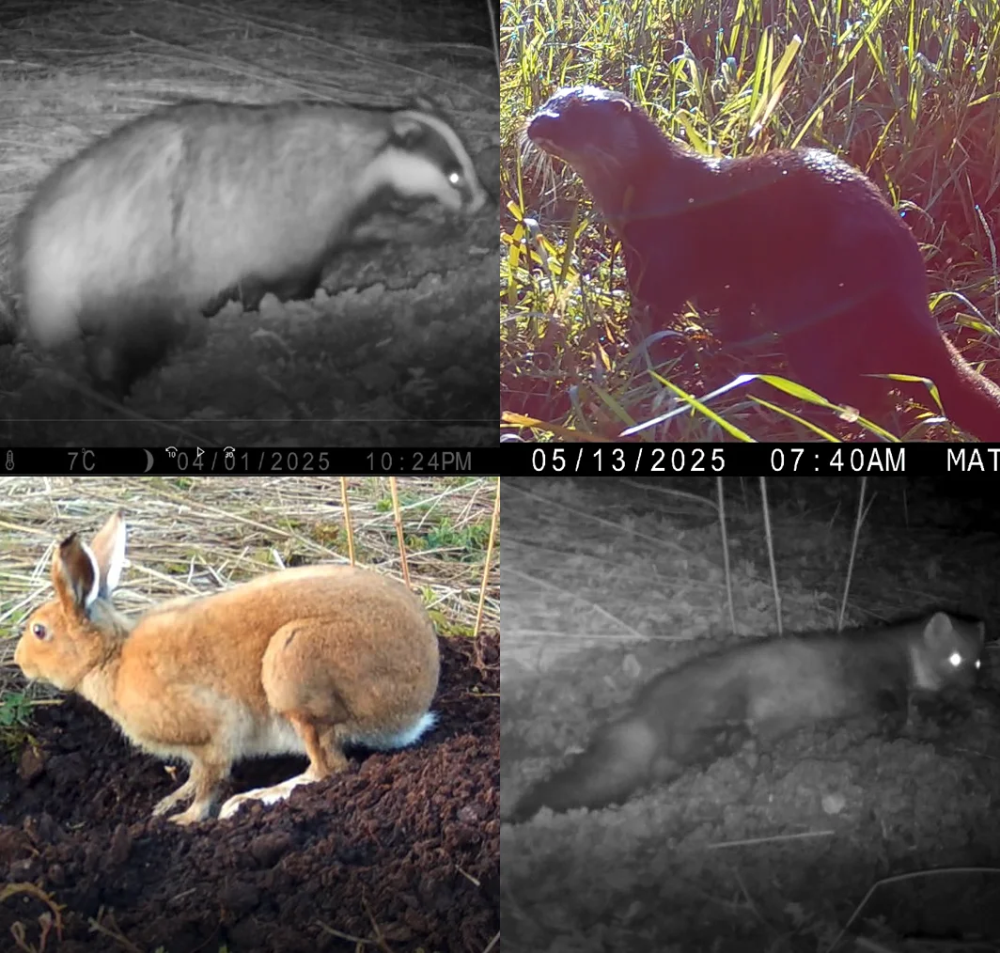

Monitoring and Recording
Starting out with fairly modest equipment - a few pairs of binocculars, a DSLR camera with a 24-70mm lens and a Browning Spec Ops Elite HP5 trail camera, we have made interesting discoveries and many contributions to the Citizen Science Portal.

Plans for 2026
Our three goals for the coming year are (1) to fundraise to purchase a Wildlife Acoustics Song Meter SM4 to make good quality sound recordings of birds and other vocal wildlife, a spotting scope and tripod to use for bird counts and to share bird watching with more of our members, and a few more trail cameras to rotate between plots of land over different seasons.
(2) Some of our land owner members are invoved in the Breeding Waders EIP project, and we'll be out hoping to record some of the following:(3) Drawing on the information provided by the Community Wetlands Forum, we're going to get our members involved in doing vegetation relevé analysis - a standardized, detailed record of all plant species in a specific, defined plot of vegetation, noting their abundance (cover), vertical structure (layers), location, and environmental factors like soil or slope. It's a semi-quantitative method that relies on estimated cover rather than precise counts, forming the basis for large vegetation databases and habitat mapping like Ireland's National Vegetation Database. Six years after industrial production has ceased its now a good time to see how the bog is rehabilitating and to set a baseline for records over the next number of years.
Vegetation relevé resources
Community Action: A Beginners Guide to Wetlands 2025. Community Wetlands Forum.
https://communitywetlandsforum.ie/wp-content/uploads/2025/03/CWF_Wetlands_Beginners_Guide_A_2025.pdfa5.pdf
A Beginner's Guide to the Sphagnum Mosses of Raised Bogs. Connecting Communities with Peatlands.
https://communitywetlandsforum.ie/wp-content/uploads/2024/02/A-Beginners-Guide-to-Sphagnum-Mosses-of-Raised-Bogs.pdf
Guidelines for Communities Managing Local Wetlands and Peatlands. Community Wetlands Forum.
https://communitywetlandsforum.ie/wp-content/uploads/2022/11/311_IRL_CWF_GuidelinesHandbook_A4_v5_FA_WEB-1.pdf